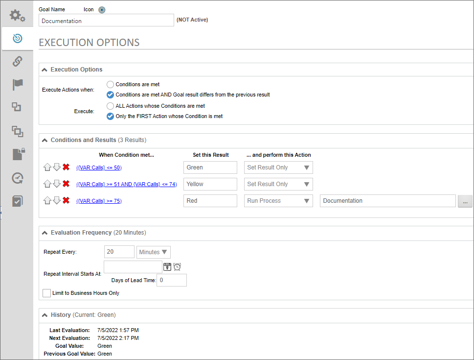
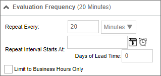
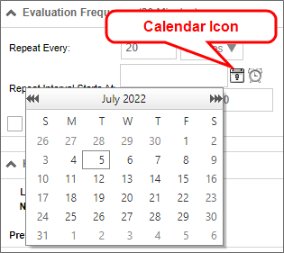
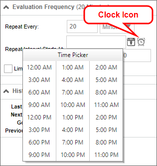
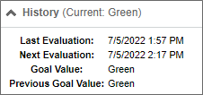

Goals, like all other Process Director objects, are configured via a tabbed interface. The interface tabs for the Goal definition, and the properties for each tab, are specified below.
The following properties can be configured in the Properties tab of a Goal definition.
The name of the Goal, which will be displayed in the Process Director Interface.
Click the Icon to open the Icon Chooser and pick the desired Icon for the Goal.
A brief description of the Goal's purpose.
The Group name for the Goal, which will appear in all dropdown menus for selecting system variable values or in the Condition Builder.
Radio button group to enable or disable a Goal's scheduled evaluation. Disabled Goals won't be evaluated on the configured schedule until they are enabled.
The Active or Not Active designation only refers to the frequency of execution. Any object that references the Goal will return the Goal's current value, irrespective of whether the Goal is active or not. Setting the goal as inactive, will not, therefore, erase the goal's value. It will only stop the goal from running the scheduled evaluation.
Goals are configured by configuring the Execution Options tab of the Goal definition.

Goals are configured to automatically evaluate on a schedule configured by the Goal creator. Actual Goal evaluation frequency, however, depends on several factors, including the frequency with which Activity checks are being run within Process Director in general. When saving a Goal definition, Process Director will try to determine if the Goal is being scheduled for evaluation more frequently than Activity checks, and will display a warning if that is the case. However, note that Goal evaluation frequency is always approximate.
The Execution Options tab is divided into four sections: Execution Options, Condition and Results, Evaluation Frequency, and History.
The Execution Options section defines how the Goal conditions are evaluated, and how actions are performed on the Goal result.
The Condition and Results section defines the conditions to be evaluated, and the results to be returned.
To add an action to the action list, click the Add Action button to display a new, blank Action.
The order in which evaluations occur can be controlled by using the Arrow Icons at the end of each condition row. A Goal result can be deleted by clicking the  icon.
icon.

A condition you specify using the Condition Builder to determine whether to return the Evaluation Result.
The value that will be returned if the specified condition evaluates as true. In most use cases, you'll likely specify a text value, but you may enter a system variable using the curly brackets syntax, e.g., {CURR_DATE}.
The action to take if the evaluation returns true. You have the following options:
This column will display the Object Picker control for a Process or Knowledge View, or will be blank, depending on the selection you make in the ...and perform this Action column.
The Evaluation Options tab enables you to define the Goal's evaluation schedule.

The frequency, in time periods from minutes to years, with which the evaluation is performed. Setting this value requires entering the number of time periods in the text box, then picking the desired time period from the adjacent dropdown. The options for the time units dropdown are:
The date and time to begin scheduling evaluations. To select a date, click the Calendar icon located to the left of the text box control to open a calender you can use to select the date.

Similarly, to select a time, click the Clock icon located to the left of the text box control to open a time selector you can use to select the time.

Sometimes, you want to begin a process prior to the due date. For example, a month-end report may need to be submitted on the first day of each month, covering the activities of the prior month. If we assume this report takes a couple of days to compile and generate, we might want to have a lead time of 2 days. In this case, the Goal will be evaluated two days early, so you have adequate lead time to generate the report.
Check the box to evaluate the Goal only during Business Hours.
Click the Evaluate Now button to evaluate the Goal immediately.
The History Section displays the evaluation run times, current result, and last result. It has no configuration settings.

While technically not a configuration tab, since there's nothing on it to configure, the Goal Execution History tab is still important.

This tab tracks all of the Goals evaluations to provide a record of when the Goal was evaluated, the results of each evaluation, and the results of the previous evaluation. This history enables you to track a Goal's evaluation frequency and results without having to refer to an external source like the Log files. It's a useful took for ensuring the Goal is running at the dates/times expected. It can also be a valuable tracking tool for matching the condition results in other objects, such as Form or process Timelines, are accurately reflecting the goal's result at any given time.